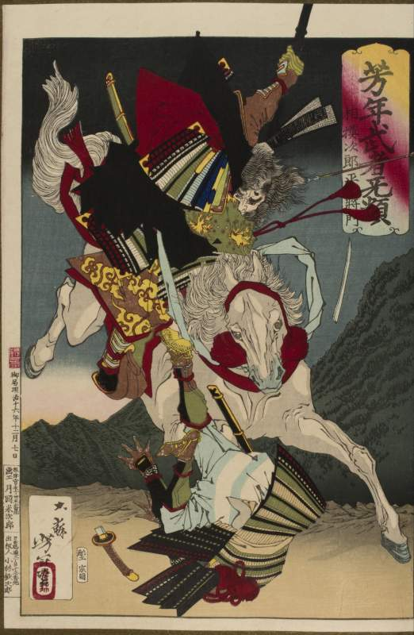

Counter-Capital — The Rebel Seat
The capital moved. He did not.

Counter-Capital — The Rebel Seat
The capital moved. He did not.
Feature map
Level-by-level features, as the figure refined them.
Raise a Rebel Seat
Action · 2 CE.
At character creation, choose WIS or CHA as your CE ability for this technique; locked thereafter. Plant a Rebel Seat: a 10-foot-radius zone (1 minute; you may maintain 1). The first time each round a willing creature inside the Seat faces a hostile non-damage territorial rule — forced movement, movement tax, silence, fear or charm compulsion, line-of-sight distortion, a zone rider — it may use its reaction to make a Strength, Wisdom, or CE-ability check against the source DC; success ignores that rider until the end of its turn. Damage applies normally: the Seat contests authority, not violence.
Eastern Road
Bonus action · 2 CE.
You may maintain 2 Seats. A willing creature in one Seat may spend 10 feet of movement to teleport to your other Seat, provided it is within 60 feet.
Local Sovereignty
Passive.
When a hostile Domain expands over a Seat, the Seat becomes a Counter-Capital (HP = 5 × your level, AC = your Technique DC). The first initiative-20 sure-hit event affecting a creature inside the Seat is intercepted — resolved against the Seat's HP, once per event. Per zack's ruling: ordinary attacks and riders inside are unaffected; Seats are visible, targetable objects.
The Head Still Flies East
Passive (trigger: you drop to 0 HP).
While at 0 HP with at least 1 Seat maintained, you remain conscious: you may speak through a Seat, perceive everything within its radius, and use Eastern Road for willing allies. No movement, attacks, or other techniques.
Three Seats of the East
Passive.
You may maintain 3 Seats. Once per round, when a rider is resisted inside a Seat, you may relocate that Seat up to 15 feet as a reaction. Seats persist 1 hour outside hostile Domains.
Maximum, Domain, or equivalent.
Capstone material.
New Imperial Capital
One Seat becomes a 30-foot-radius New Imperial Capital. Once per round, a hostile technique imposing a non-damage rule inside must win a CE-ability contest against you, or the rule does not apply that round. Eastern Road in and out of the Capital costs no CE while the Maximum lasts.
The True Capital
For 1 minute, every Seat you maintain becomes a Counter-Capital — with its printed HP, AC, and sure-hit interception — even outside any hostile Domain. Willing creatures inside your Seats automatically ignore hostile non-damage territorial rules (no reaction or check required), and a Seat destroyed during this minute is restored at 1 HP at the start of your next turn. The capital moved. It has moved back.
Build-defining options.
This technique grants Innate Technique Feats — hand-authored applications of the figure's art, available in the builder's feat picker when you select this technique.